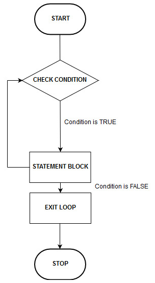
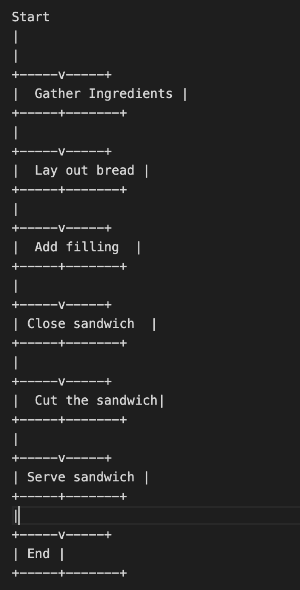
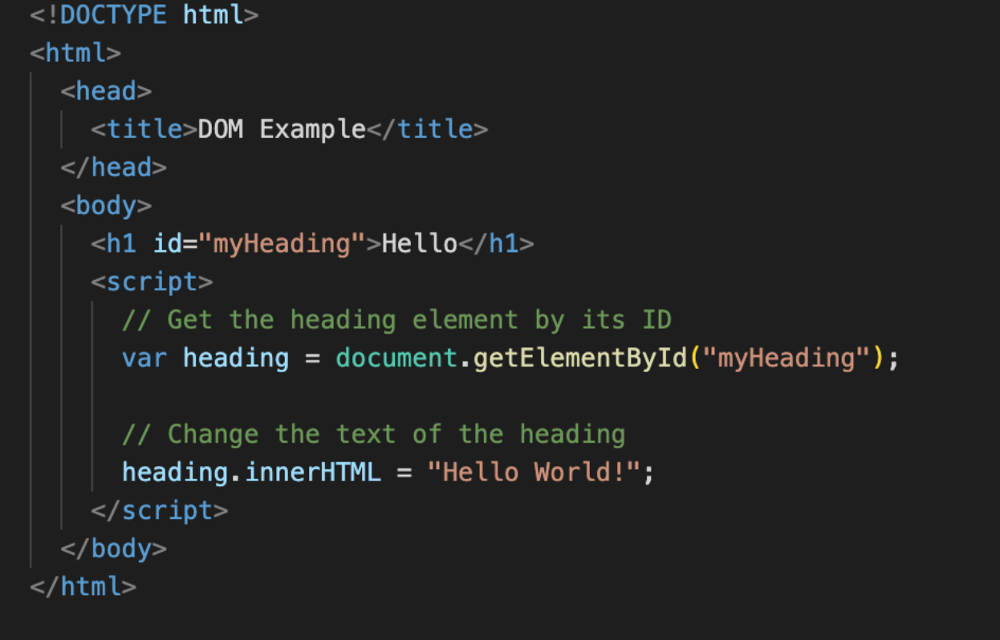
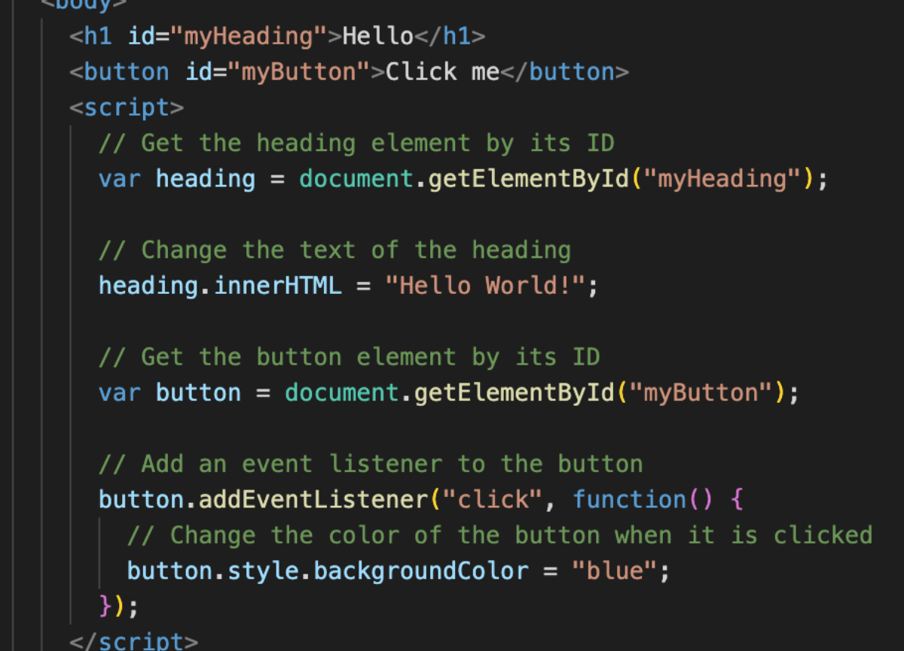
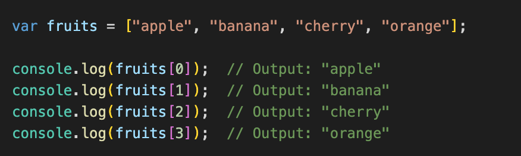
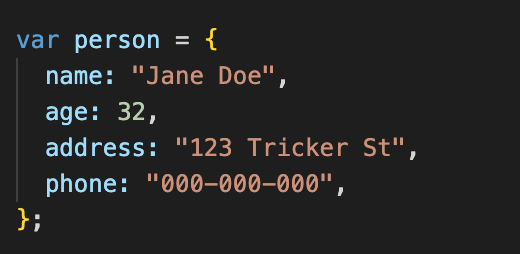

- blog
JavaScript can be thought of as the "brain" of a website, while HTML is the "skeleton" and CSS is the "skin." HTML provides the structure and content of the website, CSS gives it visual style, and JavaScript adds interactivity and dynamic behavior. Together, they work in harmony to create a functional and visually appealing website.
Control flow refers to the order in which the steps in a process are executed. For example, in making a sandwich, the first step is to gather all of the ingredients (bread, ham, tomatoes, cheese etc.). The next step is to lay out the bread, and then add the ham and cheese. Finally, the sandwich is closed and cut. These steps must be executed in a specific order, as you can't close and cut the sandwich before you've added the ham and cheese.
A loop, on the other hand, is a way to repeat a set of instructions multiple times. For example, if you're making sandwiches for multiple people, you would use a loop to repeat the process of laying out bread, adding ham, tomatoes and cheese, and closing and cutting the sandwich for each person. In this way, you can make multiple sandwiches quickly and efficiently, without having to manually repeat the process for each person.
So in summary, control flow is the order in which we go through the steps to make the sandwich and loop is the way we repeat the process of making a sandwich for multiple people.
Loop diagram example shown on left side below -- Control flow diagram example shown on right side below:
 The DOM (Document Object Model) is a way of representing an HTML or XML document in a structured tree-like format, where each element in the document is represented as an object. This allows developers to interact with the elements of a webpage, such as adding, modifying or removing elements, as well as retrieving information from the webpage.
An example (below) of how you might interact with the DOM is if you wanted to change the text of a heading on a webpage. You could use JavaScript to locate the heading element in the DOM, and then change the text of that element to whatever you want. For example, here I am using JavaScript to find the element with the ID "myHeading" and then change its text to "Hello World!"
Another example (below) would be if you want to change the color of a button when it is clicked. For example here I am using JavaScript to add an event listener to the button, which listens for a click event. When the event is triggered (button is clicked), JavaScript can then change the color of the button by looking for the button element in the DOM and modifying its CSS styles.
So in summary, DOM is a way to interact with the elements of a webpage using JavaScript, whether it be changing the text, color, style, or any other property of the element.
An array is a data structure that stores a collection of items in a specific order, such as a list of numbers or strings. Each item in the array has a unique index or position, starting from 0. You can access the items in an array by referring to their index. For example, if you have an array called "fruits" that contains the items ["apple", "banana", "cherry", "orange"], you can access the first item (which is "apple") by writing fruits[0] (0, because we always start counting at 0) and the same for the second item (which is "banana") by writing fruits[1]. And so forth. .
This is demonstrated in my example (below)
On the other hand, an object is a data structure that stores a collection of items as key-value pairs. Each key is a unique identifier that is used to access the associated value. For example, if you have an object called "person" that contains information about a person's name and age, phone number, and address, you might have keys called "name", "age", "address" and "phone" with corresponding values such as "Jane Doe", "32", "123 Tricker St" and "000-000-000". To access the name of the person, you would write person.name and to access the age you would write person.age.
So, in summary, arrays are indexed by position and you access the element by referring to its position, whereas objects are indexed by keys, so you access the element by referring to its key.
A function is a block of code that performs a specific task, and can be reused throughout a program. Functions allow you to write code once and use it multiple times, rather than writing the same code over and over again.
Imagine you want to bake a cake. You would gather the ingredients, mix them together in a specific way, and then bake the cake. This process can be written as a recipe, which is a set of instructions that you can follow to make the cake. Similarly, you can write a function in code that performs a specific task, like displaying a message on the screen or calculating the total cost of an order.
So in summary, functions are blocks of code that are designed to perform a specific task and can be reused throughout a program, making the code more organized, easy to understand, maintain, and reduce the likelihood of introducing bugs.